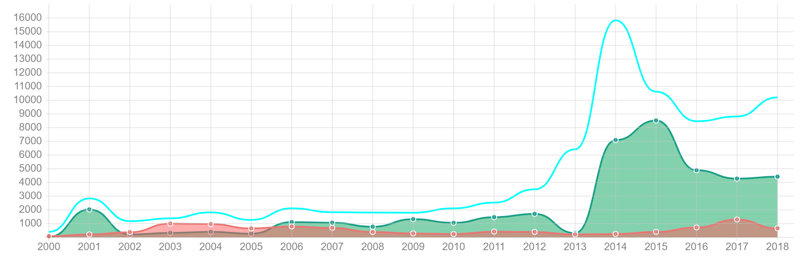
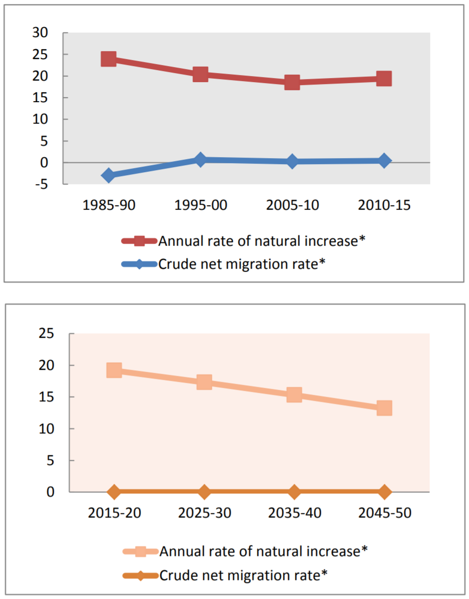
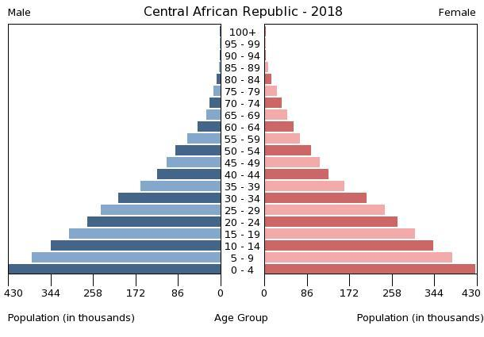

Muslims have been trapped in enclaves, and the numbers continue to grow. UN peacekeepers are forcing them to stay and refuse to offer security assistance when they attempt to leave. Hundreds of Muslims who want to leave fear attacks from the anti-balaka and do not receive peacekeeper help.
There is no remittance amount to the CAR’s GDP. It was at 0.01% until 2017, when it fell to 0.00%.
As can be seen here a spike in asylum applications since the beginning of the conflict, although it has stabilized in recent years. However, there is a slight upward trend in rejections for asylum applicants.
 This is the latest population pyramid available, courtesy of the CIA’s World Factbook. Residents no longer are leaving in droves like they did at the beginning of the conflict, and while the nation continues to stabilize, much is left to be done.
